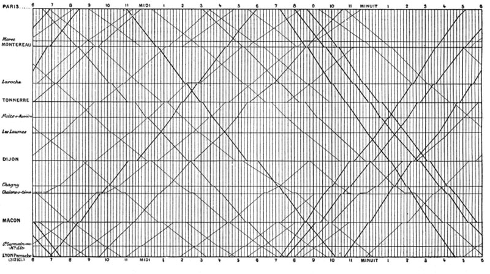
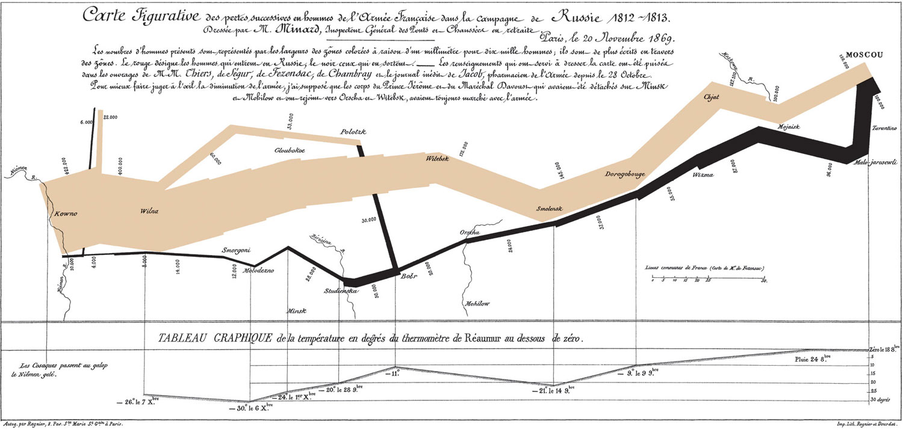

Casos
Juan Morales del Olmo
19 de abril de 2016
Estudio de casos
Vientos 1
Vientos 2
Precio electricidad
Elecciones Venezuela

Visualización de trenes
Precio del barril
Mortalidad - Florence Nightingale
Cólera - John Snow

Campaña Rusa de Napoleón
Gapminder
Litros Ebro
Visits